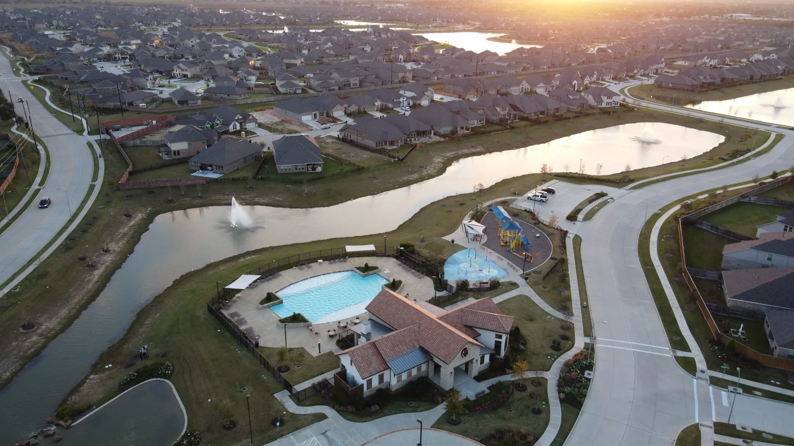

Property marketing
Edited aerial listing photos, commercial property context, 4K video and vertical reels for web, listings and social media.
Owner-operated drone services in Dallas-Fort Worth
APS Drone provides planned aerial photography, 4K video and visual documentation for real estate, commercial property, construction and business projects across the Dallas-Fort Worth Metroplex.
APS Drone is owner-operated by Atif Taftaf, an FAA Part 107-certified remote pilot. Each assignment is scoped around the client’s intended use, project site, airspace, weather, access, safety and required deliverables.
APS Drone works with real estate agents and brokerages, builders and project managers, commercial property teams, roofers and restoration professionals, venues, hospitality businesses and marketing teams. The goal is not simply to fly a drone; it is to produce useful files that match the business purpose.
Edited aerial listing photos, commercial property context, 4K video and vertical reels for web, listings and social media.
Repeatable construction viewpoints, roof and exterior imagery, and organized visual records for qualified teams to review.
FPV tours, location context and aerial video that help customers understand a property, venue or operation.
Send the location, intended use, must-have views, preferred date and delivery deadline.
APS Drone reviews airspace, weather, site access, safety and the requested scope.
The approved shot list is completed during a safe flight window and adjusted for real site conditions.
Edited media is delivered in the agreed formats, typically within 24–48 hours for standard packages.



APS Drone publishes privacy-safe project examples without exposing private customer names or exact project addresses unless that information is already public and its use is appropriate. See the DFW drone project case studies for objectives, deliverables and project constraints.
Roof and thermal imagery is capture documentation for review by the client’s qualified professional; it is not an engineering diagnosis. Mapping capture support is not a licensed land survey. Every flight remains subject to airspace, weather, access, safety and applicable FAA requirements.
APS Drone is a service-area business serving Dallas-Fort Worth and surrounding North Texas communities. It does not represent a customer-facing storefront, and private residential or customer addresses are not published as business locations.
Yes. Projects are performed by an FAA Part 107-certified remote pilot and planned around applicable airspace, weather, access and site-safety requirements.
APS Drone serves Dallas, Fort Worth, Arlington and surrounding Dallas-Fort Worth and North Texas communities.
Depending on the written scope, deliverables can include edited aerial photos, web-ready copies, 4K video, vertical clips, recurring progress views, organized thermal and visual files, and FPV tours.
Most standard photo and short-form packages are delivered within 24–48 hours after a successful flight. Larger or recurring projects follow the agreed written schedule.
Send the project location, intended use, requested deliverables and preferred date. APS Drone will confirm feasibility, availability and a clear written scope.
Business information last reviewed: August 30, 2026.